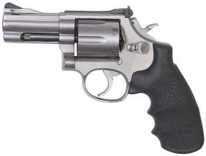

The term revolver is derived from the fact that individual bullet cartridges (bullets or rounds as they are commonly known) are loaded into a cylinder that revolves slightly with each pull of the trigger. The cylinder advances so that the next bullet is brought into line with the opening of the barrel.
As the firing pin strikes the bullet’s primer (located at the centre of the base of the cartridge), the gunpowder in the cartridge casing explodes, forcing the bullet out of the cylinder, into the opening of the barrel, down the length of the barrel, and out the muzzle.
A muzzle blast can be quite substantial in revolvers, especially where the cylinder lines up with the opening of the barrel. A revolver typically holds six cartridges in one of various calibres such as .22, .38, .357, and .44 (spoken as twenty-two, thirty-eight, three fifty-seven, and forty-four). The calibre of a firearm refers to the diameter of the bullet, usually measured in tenths of an inch. Therefore, a .38 calibre revolver fires a bullet that is 0.38 inch in diameter. Rather than refer to this diameter in metric units, the firearms industry has retained these commonly understood terms.
The ballistic property of revolver ammunition varies by calibre. Typically, .22 and .38 calibre ammunition have low muzzle velocities and limited amounts of kinetic energy. The structure and design of revolvers, specifically because of the use of a cylinder, result in significant loss of kinetic energy and muzzle velocity due to the escape of gases around the cylinder and barrel opening when the gun is fired.
Revolvers remain popular among collectors and people who like to target shoot as a hobby. Law enforcement agencies have generally discontinued their use of revolvers because of low ammunition capacity, lengthy reloading time, and inadequate muzzle velocity.
The enduring popularity of revolvers is due to their simple design. Individual parts fit together in such a way that they rarely jam. In addition, because they are made with a small number of parts, they are relatively inexpensive.